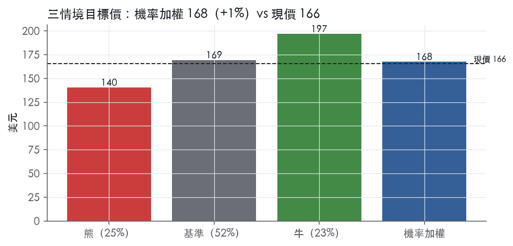
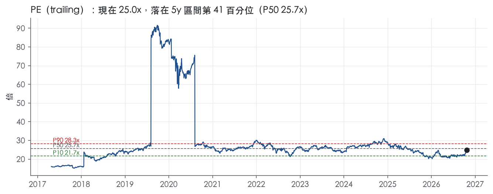
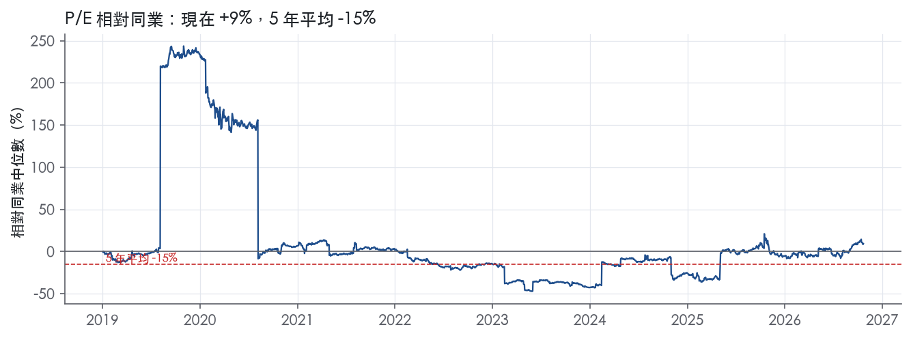
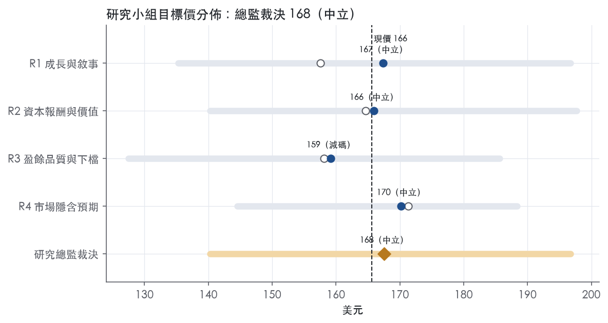
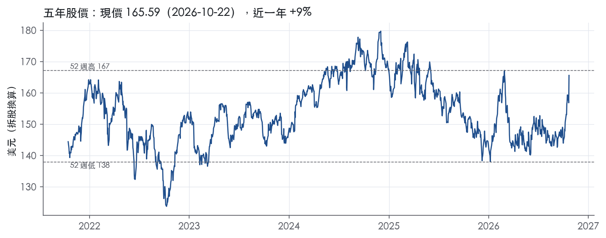

評等總表 › 必需消費 › PG
量轉正抬倍數但不到中位，中性｜評等 中立｜目標價 168
| 報告日 | 評等 | 目標價 | 當時股價 | 超額報酬 |
|---|---|---|---|---|
| 2026-10-22 | 中立 | 168 | 166 | -1.4% |
| 2026-09-28 | 中立 | 156 | 149 | +2.2% |
| 快評 | 動作 | 結論 |
|---|---|---|
| 2026-10-22 | 維持 | Q1 獲利高於我們預測，維持中立 |
| 評等 | 中立 |
| 12 個月目標價 | 168 美元 |
| 現價 | 165.59 美元（2026-10-22） |
| 預期報酬 | 股價 +1.2%＋股息 2.6%＝總報酬 +3.8%；同業籃門檻 5.1%，超額 -1.4% |
| 估值方法 | P/E 24.0x，套在第 5–8 季的EPS（也就是一年後的未來四季） |
| 三情境 | 熊 140／基準 169／牛 197 |
| 研究流程 | 四位研究員兩輪辯論＋研究總監裁決 |
| 資料來源 | SEC EDGAR XBRL、Tiingo、FRED（全免費） |
量轉正抬倍數但不到中位，中性（研究總監裁決，四位研究員兩輪辯論後）
評等 中立｜12 個月目標價 168 美元（總監三情境機率加權 168 與研究員中位數 167 各半）｜現價 165.59（2026-10-22）
預期報酬：股價 +1.2%＋股息 2.6%＝總報酬 +3.8%。同業籃門檻 5.1%，超額 -1.4%。
估值方法：P/E 24.0x，套在第 5–8 季的EPS（也就是一年後的未來四季）。三情境：熊 140（25%）／基準 169（52%）／牛 197（23%）。
什麼會讓研究總監改變看法：FY2027Q2 毛利橋出現生產力淨留存且價格回到 +1% 以上、量連兩季 ≥+2%，倍數上調到帶 P50 24.6x 並轉看多；Q2 有機跌回 1% 以下或核心 EPS 下緣下修，基準改採熊驅動、倍數降到 P25 23.3x。
| 過去四季（實際，FY2027Q1） | 未來四季 | 第 5–8 季 | 第 9–12 季 | |
|---|---|---|---|---|
| 營收（B） | 87.9B | 91.0B | 93.7B | 96.5B |
| 營收成長 | 3.5% | 3.5% | 3.0% | 3.0% |
| 營業利益率 | 22.6% | 23.0% | 23.3% | 23.3% |
| EPS（美元） | 6.64 | 6.67 | 7.06 | 7.37 |
| EPS 成長 | -3.0% | 0.5% | 5.8% | 4.4% |
| 每股股息（美元） | 4.29 | 4.29 | 4.29 | 4.29 |
| P/E（現價） | 25.0x | 24.8x | 23.5x | 22.5x |
| 股息殖利率（現價） | 2.6% | 2.6% | 2.6% | 2.6% |
過去四季為申報數字；預測為研究總監的假設、程式計算。倍數與殖利率都用現價計算，用來看現價對應各期獲利的高低。
| 項目 | 上次（2026-09-29） | 這次（2026-10-23） | 變動 |
|---|---|---|---|
| 評等 | 中立 | 中立 | ＝ |
| 機率加權目標價（美元） | 156 | 168 | +7.1% |
| 超額報酬 | 2.2% | -1.4% | -3.6 pp |
| 目標倍數 | 23.0x | 24.0x | — |
| 未來四季營收成長 | 2.0% | 3.5% | +1.5 pp |
| 未來四季營益率 | 22.8% | 23.0% | +0.2 pp |
| 未來四季 EPS（美元） | 6.45 | 6.67 | +3.4% |
| 熊／基準／牛機率 | 21／58／21 | 25／52／23 | — |
程式計算；「未來四季」各自從當次報告的資料起點算。研究總監逐點說明見第八章「與上次報告比較」。
| 情境 | 機率（歷史） | 故事 | 未來四季營收成長 | 第 5–8 季營益率 | 倍數 | 目標價 | 股價漲跌 |
|---|---|---|---|---|---|---|---|
| 熊 | 25%（26%） | 風險表第 1 條商品關稅逆風無法轉嫁、第 2 條 Walmart 與前十大客戶議價加壓，相對同業溢價回到 1 年平均，倍數到帶 P10 | 2.0% | 21.5% | 22.3x | 140 | -15.3% |
| 基準 | 52%（53%） | 有機約 3% 加 Thorne、增量重組結束後 GAAP 營益率半回升至 23.3%、再投資持續，倍數略低於帶中位 | 3.5% | 23.3% | 24.0x | 169 | 2.3% |
| 牛 | 23%（21%） | Q1 量能延續、WTI 76 下能源運輸成本回落且生產力留在利潤，營益率回到 FY2025 的 24.3%，倍數回帶 P75–P90 | 4.0% | 24.0% | 26.5x | 197 | 18.8% |
目標價由程式依研究總監的驅動與倍數計算；機率由研究總監給定。括號內是歷史頻率：把這檔股票過去十年 12 個月報酬的波動形狀，置中在基準情境，結果落在各情境附近的比例。

四位研究員用不同方法各自估值，回應研究總監的質疑後交出第二輪，最後由總監逐點裁決。各研究員的主張見第七章，裁決理由見第八章，完整論證見《研究底稿》。
| 立場（一輪→二輪） | 加權目標價（一輪→二輪） | 評等（一輪→二輪） | 第二輪倍數 | 熊～牛目標價 | |
|---|---|---|---|---|---|
| R1 成長與敘事 | 中性→中性 | 158→167 | 減碼→中立 | 24.0x | 135～197 |
| R2 資本報酬與價值 | 中性→中性 | 165→166 | 中立→中立 | 24.0x | 140～198 |
| R3 盈餘品質與下檔 | 中性→看空 | 158→159 | 減碼→減碼 | 23.5x | 128～186 |
| R4 市場隱含預期 | 中性→中性 | 171→170 | 中立→中立 | 24.6x | 145～188 |
| 研究總監裁決 | 中性 | 168 | 中立 | 24.0x | 140～197 |
目標價由程式依各自的驅動與倍數計算；評等＝機率加權總報酬 − 同業籃門檻。
P&G 是一家世界級的跨國消費品公司，核心是把品牌化、日常使用型消費品賣給全球消費者。「The Procter & Gamble Company (the Company) is a world-leading multinational consumer goods company focused on providing trusted, branded products of superior quality, performance and value to improve the lives of consumers around the world」¹。公司產品銷往約180個國家與地區，營運據點約65個國家¹。公司起源於1837年辛辛那提，由William Procter與James Gamble創立，1905年在俄亥俄州完成公司登記¹。本質上這是一家靠品牌資產、研發與規模化通路能力賺錢的公司，而不是技術驅動型成長股。FY2026 LTM 營收規模達87.92B美元，屬於巨型消費必需品公司。
P&G 的營運依產品類別劃分為五大報告分部：美容（Beauty）、美容修容（Grooming）、保健（Health Care）、織物與家居護理（Fabric & Home Care）、以及嬰兒、婦幼與家庭護理（Baby, Feminine & Family Care）²。10-K Item 1 本身對各分部營收佔比與毛利結構未直接揭露數字，僅說明「Information on key product categories can be found in the MD&A and Note 2 to our Consolidated Financial Statements」¹，即分部財務細節須參照MD&A與附註2，Item 1正文本身對各分部的規模與占比「10-K 未揭露」。從FY2027Q1新聞稿可見，各分部有機銷售成長分別為：Beauty +5.4%、Grooming +4.5%、Health Care +2.7%、Fabric & Home Care +4.8%、Baby/Feminine/Family Care +3.0%²。這顯示公司成長引擎目前集中在Fabric & Home Care與Beauty兩個分部，而Baby/Feminine/Family Care相對較弱。公司強調的差異化是在「product performance, packaging, brand communication, retail execution and value」五個維度上追求「irresistible superiority」¹，這套打法本質上是靠持續的產品與包裝創新疊加品牌行銷投入，去支撐溢價定價能力。
P&G 的客戶結構高度集中於零售巨頭，通路則涵蓋實體與數位。「Sales to Walmart Inc. and its affiliates represent approximately 16% of our total sales in 2026, 2025 and 2024. No other customer represents more than 10% of our total sales. Our top ten customers accounted for approximately 43% of our total net sales in 2026 and 2025 and 42% in 2024」¹。客戶類型包括「mass merchandisers, digital commerce (including social commerce) channels, grocery stores, membership club stores, drug stores, department stores, distributors, wholesalers, specialty beauty stores (including airport duty-free stores), high-frequency stores, pharmacies, electronics stores and professional channels」，公司也直接面向消費者銷售¹。地理上，公司海外營運貢獻超過一半年度淨銷售額：「our operations outside the U.S. generate more than 50% of our annual net sales」¹。這代表P&G對匯率波動與單一大客戶（Walmart）的議價力有結構性曝險，任何零售通路議價策略轉變都會直接衝擊毛利與出貨節奏。FY2027Q1各區域驅動力也有分化：Beauty在北美、拉美、歐洲與中國各有不同貢獻，Fabric & Home Care成長主要來自北美與歐洲²，顯示北美與歐洲仍是最主要的成長貢獻地區。
過去四個財季，P&G 營收成長動能逐步從匯率/定價驅動轉向更廣泛的量、價、組合共同貢獻，但利潤率呈現壓力。FY2026Q2（2025-12-31）營收22.21B美元，年增1.5%，營益率24.2%（is.ebit_margin或對應資料包欄位，24.2%）。FY2026Q3（2026-03-31）營收21.23B美元，年增7.4%，但營益率降至21.5%。FY2026Q4（2026-06-30）營收21.20B美元，年增2%，「organic sales...unchanged versus the prior year」³，核心EPS年減3%：「Diluted EPS $1.26, (15)%; Core EPS $1.43, (3)%」³，營益率滑落至18.6%，報告毛利率季減60個基點：「Reported gross margin for the quarter decreased 60 basis points versus year ago」³。最新一季FY2027Q1（2026-09-30）營收23.28B美元，年增4.0%：「reported first quarter fiscal year 2027 net sales of $23.3 billion, an increase of four percent versus the prior year」²，稀釋EPS 1.97美元，年增1%，核心EPS 2.00美元，年增1%²，但「Reported gross margin for the quarter decreased 160 basis points versus the prior year」²，營益率回升至25.5%（is/ltm對應資料包）。公司對FY2027指引：「maintained its outlook for organic sales growth in the range of one to three percent」、「maintained its fiscal 2027 diluted net earnings per share growth to be in the range of one to five percent versus fiscal 2026 diluted net EPS of $6.62」²，同時因收購Thorne上修全年整體銷售成長指引至2%至4%：「P&G updated its guidance range for fiscal 2027 all-in sales growth to be in the range of two to four percent versus the prior year, reflecting the acquisition of Thorne as of October 1, 2026」²。公司並預期FY2027原物料成本逆風約1.4B美元稅後：「P&G now expects a commodity cost headwind of approximately $1.4 billion after tax」²，加計利息與匯率逆風合計每股拖累0.79美元，約為核心EPS成長的11%拖累²。整體來看，近四季營收成長穩定在個位數正值，但成本端（商品、關稅、再投資）持續侵蝕毛利與營益率，是目前最大的財務雜訊來源。
公司自己定義的成長引擎是「irresistible superiority」策略框架，涵蓋產品表現、包裝、品牌傳播、零售執行與價值五個維度，並以研發與消費者洞察驅動創新：「We invest in research and development and consumer insights to invent new categories or products and innovate our existing products」¹。管理層在FY2027Q1新聞稿中強調「sharpened execution of our integrated strategy」，並表示「We remain committed to our strategy to delight consumers with superior products at a superior value by putting the consumer first in everything we do」²。公司在FY2026Q4新聞稿中進一步闡述其「Focused Portfolio, Supply Chain and Productivity Plan」：「In June 2025, the Company announced a portfolio and productivity plan to streamline its portfolio and organization to improve its cost structure and invest in growth. The Company expects to incur non-core restructuring costs of approximately $1B to $1.6B before-tax over a two-year period. The Company incurred over half of the costs under this plan in fiscal 2026, with the remainder expected in fiscal 2027」³。公司將創新定價（innovation-based pricing）、產品組合優化與生產力節省（productivity savings）列為維持毛利與營益率的主要工具，各分部業績討論中反覆提及「innovation-based pricing」與「productivity savings」作為對抗成本逆風的手段²。公司也明確將Thorne收購納入FY2027成長敘事，作為拓展健康領域版圖的動作²。從財務數據看，這套策略短期代價是毛利率與營益率承壓（FY2026Q4營益率僅18.6%），長期賭注是靠創新定價與生產力重建利潤率，而FY2027Q1毛利率已開始修復（营益率回到25.5%），顯示策略執行有初步成效。風險在於商品成本與關稅逆風規模（稅後1.4B美元）相對核心EPS成長空間（僅1%至5%區間）並不小，若執行力跟不上，指引區間下緣的壓力會放大。
P&G 評為寬護城河，趨勢穩定；最新 ROIC 落在可得資料區間的最低點，列為觀察項。護城河的主體是全球品牌組合，再加上規模帶來的行銷與通路成本優勢；ROIC 在有資料的 5 年全數高於資本成本代理值。這個評級的主要弱點是 ROIC 只有 5 年資料，十年期的判斷有一部分要靠毛利率的長期穩定性來補強。
優勢來源有兩類：無形資產與成本優勢；轉換成本、網路效應、效率規模都找不到證據，不列。
無形資產（品牌、專利）：公司自述「In part, our success can be attributed to the existence and continued protection of these trademarks and patents.」⁴。專利涵蓋「significant product formulation and processes used to manufacture our products」⁴。風險因子也承認「Many of our brands have worldwide recognition and our financial success directly depends on the success of our brands.」⁵。在通路自有品牌的夾擊下，P&G 仍能維持溢價，靠的就是品牌，這是護城河的主體。
成本優勢（規模）：公司產品銷往約 180 個國家與地區，且「often holding a leadership or significant market share position」⁴。公司的商業模式「relies on continued productivity improvements to fuel investments in research and development and marketing」⁴。規模讓 P&G 能用生產力節省支應研發與廣告投入，形成小品牌難以複製的再投資循環；但這是相對優勢，不是絕對的成本壁壘。
消費者換品牌幾乎沒有成本，零售商也能隨時調整貨架，因此不列轉換成本。
數字大致支持寬評級：ROIC 高且極穩定，毛利率也穩定；衝突在於營益率波動，以及 ROIC 的資料年限不足。ROIC 最新 20.1%，有資料年份平均 20.6%，標準差 0.6%；資本成本代理值 10.1%，平均超額 10.5%，5 年中有 5 年高於資本成本。毛利率十年平均 49.7%、標準差 1.4%；最低點 47.4%在通膨衝擊後回升到 51.4%，代表成本上漲能靠定價轉嫁回來，這是定價權最直接的證據。FCF 利潤率標準差 1.8%，現金創造能力同樣穩定。
衝突一：營益率標準差 4.4%、最低 8.1%，低點落在 FY2019；但同年毛利率 48.6%正常，我們判斷這是毛利以下的單年非經常項目，不代表競爭地位惡化，因此不下修評級。
衝突二：量化底稿 ROIC 欄位雖然標示「十年平均」，實際只有 FY2022 到 FY2026 共 5 年資料，單靠這組數字不足以證明十年以上的超額報酬。我們以十年期毛利率與 FCF 利潤率的穩定性補強，仍維持寬評級；估值端需要知道，這項證據的強度低於完整的十年 ROIC 序列。
衝突三：最新 ROIC 20.1% 正好是 5 年最低值，最近一季毛利率 49.8%也低於去年同季的 51.4%。目前幅度還小，所以趨勢評為穩定而非變窄；若之後連續下滑，就應改判。
最大威脅是通路議價力，以及自有品牌與硬折扣通路；其次是成本轉嫁失靈。Walmart 及其關係企業約占總銷售 16%，前十大客戶約占 43%⁴。公司承認零售通路集中「could create significant cost and margin pressure on our business」⁵。公司也承認，若客戶把貨架讓給「other branded manufacturers, private label brands and generic non-branded products」，業績會受損⁵。競爭面上，公司自己點名「ease of competitive entry into certain categories and growth in hard discounter channels」⁵。成本面上，公司寫道「When prices for these items change, we may or may not pass the change to our customers.」⁴。數位通路與媒體碎片化降低了新品牌觸及消費者的門檻，會直接削弱大額廣告預算的規模優勢；在十年的時間維度上，這是我們認為最實質的侵蝕路徑。品牌聲譽事件（召回、成分疑慮、包裝塑膠爭議）屬尾端風險：單一事件可能重傷單一品牌，但難以擊穿整個品牌組合。
目標倍數相對必需消費同業應給予溢價，理由是 ROIC 超額報酬持續且穩定，毛利率紀錄也證明公司具定價權。不過營收成長十年平均僅 3.3%，溢價的來源是超額報酬的持續期而非成長；建議以自身 5 年 P/E 中位數 25.7x為錨，不宜上看 5 年 P90 的 28.3x。若毛利率連續數季低於去年同期，或 ROIC 跌破有資料以來的區間，應下調溢價幅度。
| 指標 | 最新 | 十年平均 | 標準差 | 最低 | 最高 |
|---|---|---|---|---|---|
| ROIC | 20.1% | 20.6% | 0.6% | 20.1% | 21.6% |
| 毛利率 | 50.2% | 49.7% | 1.4% | 47.4% | 51.4% |
| 營業利益率 | 22.7% | 20.8% | 4.4% | 8.1% | 24.3% |
| FCF 利潤率 | 17.4% | 17.7% | 1.8% | 14.4% | 20.5% |
| ROE | 30.1% | 26.5% | 7.7% | 7.8% | 31.5% |
程式計算。資本成本代理值（10 年債＋5%）：10.1%；ROIC 平均減資本成本：10.5%；ROIC 有資料的 5 年中，高於資本成本 5 年。
LTM 營業現金流／淨利 1.24x、自由現金流／淨利 0.96x，兩項均為綠燈且十年均值更高（1.48x／1.18x），顯示盈餘長期有現金支撐。應計比率 LTM −3.0%、近三年 −2.8%，持續為負值代表盈餘不是靠應計堆出來。唯一一條程式紅旗是 FY2019→FY2020 淨利率跳動，屬於可解釋的一次性項目，非盈餘品質惡化訊號，詳見下方逐條說明。
跟得上，且十年趨勢是現金轉換能力比近期更強。LTM CFO／淨利 1.24x，近三年平均 1.22x、十年平均 1.48x，三個窗口都在綠燈區間（≥1.00x）。FCF／淨利 LTM 0.96x、近三年 0.98x、十年 1.18x，同樣全部過關（≥0.90x 綠燈門檻）。最新一季（FY2027Q1）CFO 5.77B、FCF 4.40B、淨利 4.73B（資料包最近八季表），新聞稿也揭露同季「Operating cash flow was $5.8 billion...free cash flow productivity was 93%」²，與資料包數字方向一致。應收帳款成長減營收成長為 −5.3pp、存貨成長減營收成長為 +4.9pp（FY2026），兩者都落在綠燈區間（≤5pp），營運資金沒有在吃掉盈餘。
本季 GAAP 稀釋 EPS 1.97，Core EPS 2.00，差距僅 0.03，幅度很小²。新聞稿明確說「Core gross margin...excluded the impact from incremental restructuring charges」、「Core SG&A excluded the impact from incremental restructuring charges」²，唯一的非 GAAP 剔除項目是重組費用（restructuring charges），這與 10-K 揭露的「ongoing restructuring program」導致員工數年減 4%（104,000 人）一致¹。重組費用屬於會反覆發生但金額不固定的項目，我認為應視為部分真實成本而非純一次性——因為公司已連續多年執行重組計畫，但新聞稿未揭露本季具體金額，無法量化。SBC 本系統不加回，LTM SBC／營收僅 0.6%，對盈餘影響極小，綠燈。
槓桿與付息能力都在安全區間，股東回饋強度高但可持續。淨負債／EBITDA LTM 1.02x、近三年 1.07x、十年均值 1.40x，全部遠低於 1.50x 綠燈門檻。利息保障倍數 LTM 22.0x、近三年 21.7x、十年均值 26.6x，遠高於 8.00x 門檻，付息能力沒有壓力。稀釋股數年變動為 −0.6%（LTM）、−0.8%（近三年）、−1.3%（十年均值），皆為負值代表回購持續淨減少股數，無稀釋問題。（股利＋回購）／淨利 LTM 為 95.6%，近三年 97.9%，十年均值 133.3%，均達綠燈（≥50%）標準，十年均值超過 100% 顯示公司曾在部分年度以舉債方式回饋股東，但 LTM 已降到 95.6%，在槓桿仍低（1.02x）下不構成風險。本季實際回饋 2.6B 股利加 1.3B 回購、合計 3.9B²，全年度指引為股利逾 10B、回購約 5B²。
程式只標出一條紅旗：淨利率 FY2019→FY2020 跳動 +13 個百分點。年度表顯示 FY2019 營益率 8.1%、淨利 3.90B、EPS 1.43，FY2020 營益率回升到 22.1%、淨利 13.03B、EPS 4.96（資料包年度表）。FY2019 單年獲利大幅塌陷再於 FY2020 彈升，型態符合一次性減損或商譽／無形資產減記，而非盈餘品質結構性惡化。本次提供的 10-K（FY2026）MD&A 節錄未包含 FY2019 當年度的具體減損說明，我無法引用原文數字證實減損項目與金額，但從十年現金轉換比率（CFO／淨利十年均值高達 1.48x、FCF／淨利十年均值 1.18x）看，若 FY2019 淨利被一次性費用壓低，現金流不受影響，這與減損性質（非現金）的解釋相符。結論：這條紅旗屬於「會計口徑造成的假警報」——一次性非現金項目导致的淨利率波動，不影響對目前盈餘品質的判斷，但本報告未能用原文數字完全佐證，建議估值研究員留意此缺口。
盈餘品質高、現金轉換穩定，估值可直接用 GAAP／Core EPS 中較貼近兩者的任一指標，不需要對盈餘打一個額外的品質折價。FY2019 的一次性波動已過去五年以上，不應影響當前 trailing 倍數的解讀，目前 P/E 25.0x 落在 5 年分位 40.7%、與 10 年中位數 25.4x 幾乎重合，屬於合理區間而非品質溢價或折價。槓桿（淨負債／EBITDA 1.02x）遠低於警戒線，不構成限制倍數的理由，目前 EV/EBITDA 17.7x、EV/EBITA 20.2x 的估值水準應由成長與毛利率趨勢決定，而非資產負債表風險。
| 項目 | LTM | 近三年 | 十年 | 燈號 | 規則 |
|---|---|---|---|---|---|
| 營業現金流／淨利 | 1.24x | 1.22x | 1.48x | 綠 | ≥1.00x 綠、<0.80x 紅 |
| 自由現金流／淨利 | 0.96x | 0.98x | 1.18x | 綠 | ≥0.90x 綠、<0.60x 紅 |
| 應計比率（(淨利−CFO)／平均總資產） | -3.0% | -2.8% | -3.7% | 綠 | ≤0.0% 綠、>5.0% 紅 |
| SBC／營收 | 0.6% | 0.6% | 0.7% | 綠 | ≤3.0% 綠、>8.0% 紅 |
| 淨負債／EBITDA | 1.02x | 1.07x | 1.40x | 綠 | ≤1.50x 綠、>3.00x 紅 |
| 利息保障倍數（營業利益／利息） | 22.0x | 21.7x | 26.6x | 綠 | ≥8.00x 綠、<3.00x 紅 |
| 稀釋股數年變動 | -0.6% | -0.8% | -1.3% | 綠 | ≤0.0% 綠、>3.0% 紅 |
| （股利＋回購）／淨利 | 95.6% | 97.9% | 133.3% | 綠 | ≥50.0% 綠、<0.0% 紅 |
| 應收帳款成長 − 營收成長（FY2026） | -5.3pp | — | — | 綠 | ≤5pp 綠、>15pp 紅 |
| 存貨成長 − 營收成長（FY2026） | +4.9pp | — | — | 綠 | ≤5pp 綠、>15pp 紅 |
程式計算；燈號以 LTM（無則近三年平均）判定。
| 風險 | 觸發指標（看什麼數字、在哪裡看） | 對 EPS 的影響方向與粗略幅度 | 未來 12 個月發生機率 | 出處 |
|---|---|---|---|---|
| 商品成本／關稅逆風侵蝕毛利 | 每季 8-K 的「reported gross margin」年變動（基點）、commodity cost headwind 美元數字 | 負向；FY2027 預估稅後商品成本逆風約 1.4B 美元，加計利息、非營業收入、匯率合計拖累 EPS 0.79 美元、約為核心 EPS 成長的 11%² | 高 | 8-K 財報新聞稿（2026-10-22） |
| Walmart 與前十大客戶集中度 | Walmart 占總銷售比例（10-K 揭露）、前十大客戶占比（10-K 揭露）、任一大客戶庫存／上架政策公告 | 負向；Walmart 約占總銷售 16%，前十大客戶約占 43%，若談判條件或上架空間惡化，衝擊直接且大¹ | 中 | 10-K 年報 FY2025 Item 1（業務） |
| 匯率與海外曝險 | 海外營收占比（10-K 揭露）、新聞稿中 FX 對淨銷售與 Core EPS 的影響百分點 | 負向；海外營收占年度淨銷售逾 50%，FY2027Q1 匯率對 EPS 已有不利因子（50M 美元稅後列入逆風）¹² | 中 | 10-K 年報 FY2025 Item 1（業務） |
| 重組計畫執行力不足 | 8-K／10-K 中揭露的 restructuring charge 實際發生金額 vs 1B–1.6B 美元計畫區間、營益率是否隨計畫推進改善 | 負向（若未達標）；計畫稅前成本 1B–1.6B 美元，已逾半於 FY2026 發生，若剩餘部分執行不順或生產力節省不如預期，毛利率修復會落空³ | 中 | 8-K 財報新聞稿（2026-07-29） |
| 資訊安全／IT-OT 系統事故 | 公司是否揭露重大資安事件（8-K Item 1.05）、是否出現勒索軟體或供應鏈軟體入侵導致營運中斷 | 負向；一旦發生可能造成訂單、出貨、付款處理中斷及補救成本，10-K 明確列為可能「material adverse impact」⁵ | 低 | 10-K 年報 FY2026 Item 1A（風險因素） |
商品成本／關稅逆風最值得盯，因為它是唯一一條公司自己給出具體美元數字且已經在發生的風險。FY2027Q1 報告毛利率「decreased 160 basis points versus the prior year」，核心毛利率下滑 150 個基點，其中 140 個基點來自商品成本上升、140 個基點來自產品再投資²。公司目前靠生產力節省（120 個基點）與關稅相關回收（50 個基點）去抵銷，但抵銷幅度尚未完全覆蓋逆風²。公司預估全年稅後商品成本逆風約 1.4B 美元，結合利息、非營業收入與匯率逆風，合計拖累每股 0.79 美元，相當於核心 EPS 成長的 11%²。考慮到 FY2027 全年 Core EPS 成長指引只有「in-line to three percent」²，這個逆風規模相對成長空間並不小，任何進一步惡化都會直接吃掉指引區間。
Walmart 與客戶集中度是結構性風險，監測簡單但殺傷力大。「Sales to Walmart Inc. and its affiliates represent approximately 16% of our total sales in 2026, 2025 and 2024」「Our top ten customers accounted for approximately 43% of our total net sales in 2026 and 2025」¹。10-K 本身點名「continued concentration among our retail customers, an increase in buying alliances or other changes in the negotiation strategies of our customers could create significant cost and margin pressure」⁵。這代表只要 Walmart 或前十大客戶任何一家調整上架空間、庫存水位或要求更優惠貿易條件，衝擊會直接反映在營收與毛利，而不需要等到宏觀數據轉弱才看得到。
匯率與海外曝險是 P&G 作為跨國公司無法迴避的常態風險，但規模可觀測。「our operations outside the U.S. generate more than 50% of our annual net sales」¹，10-K 明確提到歐元走強可能衝擊外幣債務到期現金流與利息支出⁵。FY2027Q1 新聞稿中 FX 對淨銷售驅動是 0%，但公司仍把「$50 million after-tax from unfavorable foreign exchange rates」列入全年逆風項目²，顯示匯率風險目前規模不大但方向已轉為不利，值得持續追蹤季度 FX driver 欄位的變化。
重組計畫執行力關係到毛利率能否如預期修復，是可驗證的執行風險。公司在 FY2026Q4 新聞稿中揭露「the Company expects to incur non-core restructuring costs of approximately $1B to $1.6B before-tax over a two-year period. The Company incurred over half of the costs under this plan in fiscal 2026, with the remainder expected in fiscal 2027」³。FY2026Q4 營益率一度降到 18.6%，FY2027Q1 已回升到 25.5%，顯示初步成效，但若剩餘重組費用規模超預期或生產力節省不如預期兌現，毛利率修復軌跡可能再度中斷。
資訊安全事故機率相對低，但 10-K 把它寫得很重，而且一旦發生影響面廣、不易量化上限。10-K 指出攻擊手法「frequently change, continue to advance in sophistication」，且公司承認「cannot guarantee that our security efforts...will prevent material breaches」⁵。這條風險目前沒有具體财务數字可引用，只能用「是否發生重大資安事件公告」作為二元觸發指標。
Thorne 收購的整合風險未被 10-K 涵蓋（10-K 申報於收購前），但已被納入 FY2027 全年銷售指引上修的理由之一：「reflecting the acquisition of Thorne as of October 1, 2026」²。如果整合不順利或協同效益不如預期，這會是一個新增的、資料包目前完全沒有歷史數據可比對的風險點，建議下一季財報緊盯 Thorne 相關的分部揭露與商譽減值跡象。
利率上升對淨利息支出的二次衝擊未被充分量化在 10-K 敘述風險段落中（10-K 只定性描述），但 FY2027 指引已明確寫入「$300 million after-tax from higher net interest expense」²，且公司總債務近四季持續攀升（至 FY2027Q1 由 34.14B 升至 38.92B），搭配目前美債 10 年利率 5.13%處於相對高位，若後續再融資規模擴大，利息支出逆風可能比目前指引的 300M 美元更大。
現價 165.59 對應 trailing（過去四季）P/E 25.0x、EV/EBITDA 17.7x、EV/EBITA 20.2x、EV/Sales 4.6x、FCF 殖利率 4.0%。主要估值倍數 P/E 現在 25.0x，落在5 年區間第 41 百分位（P10／P50／P90 = 21.7x／25.7x／28.3x）。

把程式的機械基準預測放到現價下，市場付的前瞻倍數是：P/E（未來四季） 25.1x、P/E（第 5–8 季） 23.6x。反推 DCF 顯示市價隱含未來五年營收年成長 11.8%（WACC 9.0%、終值成長 3.0%、FCF 利潤率 16.4%，SBC 不加回）。
| 倍數 | 現在 | 5 年 P10 | 5 年 P50 | 5 年 P90 | 現在分位 | 全期 P50 |
|---|---|---|---|---|---|---|
| P/E | 25.0x | 21.7x | 25.7x | 28.3x | 40.7% | 25.4x |
| EV/EBITDA | 18.3x | 16.4x | 19.1x | 20.7x | 35.3% | 19.1x |
| EV/EBITA | 21.0x | 18.6x | 21.6x | 23.5x | 40.2% | 21.8x |
| EV/EBIT | 21.3x | 18.9x | 22.0x | 23.9x | 39.3% | 21.9x |
| EV/Sales | 4.8x | 4.4x | 4.9x | 5.3x | 36.4% | 4.9x |
| P/S | 4.5x | 4.1x | 4.6x | 5.0x | 40.4% | 4.5x |
| P/FCF | 26.0x | 23.6x | 25.9x | 29.5x | 52.1% | 25.1x |
trailing 倍數（股價 ÷ 過去四季）；分位以每個交易日計算。
同業籃：CL, KMB, KVUE, CLX, CHD（手動名單（playbooks/peers.yaml））。評等門檻 5.1%：同業「倍數不變下持有一年」的隱含報酬中位數（＝ FCF 殖利率 ×(1＋g)＋g，g 為 5 年營收年複合成長並夾在 −2%～8%），每家夾在 0～15%、P/E 低於 5 倍視為資料可疑而排除，中位數再限制在 10 年債到 10 年債＋5% 之間。
| 代號 | 市值 | 5 年營收 CAGR | 營益率 | ROIC | P/E | 5 年 P/E 中位數 | EV/EBITDA | P/FCF | 隱含報酬 |
|---|---|---|---|---|---|---|---|---|---|
| PG | 383.8B | 2.7% | 22.6% | 20.1% | 25.0x | 25.7x | 17.7x | 25.0x | 6.8% |
| CL | 77.6B | 4.4% | 14.9% | 36.1% | 38.6x | 31.5x | 22.3x | 20.1x | 9.5% |
| KMB | 37.4B | -3.0% | 15.2% | 21.9% | 19.1x | 22.5x | 13.3x | 20.5x | 2.8% |
| KVUE | 38.2B | 0.1% | 17.1% | 16.7% | 22.8x | — | 12.0x | 19.9x | 5.1% |
| CLX | 10.7B | 1.1% | 16.1% | 33.9% | 14.4x | 44.2x | 10.4x | 28.2x | 4.7% |
| CHD | 25.9B | 4.8% | 17.5% | 14.6% | 35.1x | 33.0x | 20.9x | — | 7.8% |
| 同業中位數 | 1.1% | 16.1% | 21.9% | 22.8x | 32.2x | 13.3x | 20.3x | 5.1% |
全部 trailing，程式以各公司 SEC XBRL 與 Tiingo 行情計算；第一列為本檔。
P/E 相對同業中位數：現在 9.4%，過去 1 年平均 -0.4%、3 年 -11.7%、5 年 -15.1%；EV/EBITDA 相對同業中位數：現在 38.0%，過去 1 年平均 29.9%、3 年 15.4%、5 年 8.5%。

事後實現前瞻倍數帶（P/E，2018-11-19..2025-11-17）：P10／P50／P90 = 22.3x／24.6x／27.6x。它是每個交易日的股價除以之後四季實際實現的指標；一年後，今天的第 5–8 季正是那時的未來四季，所以這條帶是 12 個月目標價的同口徑倍數。因為用的是事後實際而非當時預期，過去成長超乎預期的公司這條帶會偏低。
程式的機械基準（成長率從過去四季年增率三年收斂到 6%、利潤率持平）用 事後實現前瞻 P/E P50 估值得到 173（4.3%），市場現行前瞻倍數（現價 ÷ 基準 未來四季指標）一年後持平，套在基準 第 5–8 季指標得到 177。這兩個數字只是參考點，不是本報告的目標價；研究員對這個定價的回應在第七章。
下表是每位研究員第一輪（各自獨立）與第二輪（回應研究總監的質疑後）的結果。目標價全由程式依各自的假設計算。
| 立場（一輪→二輪） | 加權目標價（一輪→二輪） | 評等（一輪→二輪） | 第二輪倍數 | 熊～牛目標價 | |
|---|---|---|---|---|---|
| R1 成長與敘事 | 中性→中性 | 158→167 | 減碼→中立 | 24.0x | 135～197 |
| R2 資本報酬與價值 | 中性→中性 | 165→166 | 中立→中立 | 24.0x | 140～198 |
| R3 盈餘品質與下檔 | 中性→看空 | 158→159 | 減碼→減碼 | 23.5x | 128～186 |
| R4 市場隱含預期 | 中性→中性 | 171→170 | 中立→中立 | 24.6x | 145～188 |
| 研究總監裁決 | 中性 | 168 | 中立 | 24.0x | 140～197 |
目標價由程式依各自的驅動與倍數計算；評等＝機率加權總報酬 − 同業籃門檻。
分歧度：第一輪 加權目標價 158～171（區間＝現價的 8%）· 倍數 23.5～24.5x · 立場 中性×4（方向一致）；第二輪 加權目標價 159～170（區間＝現價的 7%）· 倍數 23.5～24.6x · 立場 中性×3、看空×1。

| 研究員 | 第二輪主張 | 堅持的理由 |
|---|---|---|
| R1 成長與敘事 | 中性，24.0x：成長降檔、ROIC 在低點，倍數略低於歷史中位。 | 後兩年營收維持 3.3%，營益率三年持平 23.3%，生產力全數再投資。 |
| R2 資本報酬與價值 | 中性，24.0x：ROIC 5 年低點，價格只貢獻 +0.4%，倍數小幅收縮。 | 價格回到 +1% 以上才給中位倍數，熊情境機率維持 26%。 |
| R3 盈餘品質與下檔 | 相對減碼，23.5x：FY2027 核心 EPS 中點只成長約 1.5%。 | 商品逆風上修而 EPS 區間不動，熊情境疊加四項逆風到 127.5 美元。 |
| R4 市場隱含預期 | 中性，24.6x：取歷史中位，溢價回落與歷史偏低互相抵銷。 | 市場低估 FY2028 營益率，重組結束、WTI 回落後回到 23.3%。 |
每位研究員的逐條回應與完整論證見《研究底稿》（PG_研究底稿_2026-10-23.docx）。
| 分歧點 | R1 | R2 | R3 | R4 | 什麼資料會分出勝負 |
|---|---|---|---|---|---|
| ① 目標倍數（eps@q5_q8） | 24.0x：成長降檔、ROIC 低點、成長靠毛利換 | 24.0x：ROIC 低點、價格 +0.4%、相對同業溢價在 5 年高點 | 23.5x：EPS 指引中點僅 +1.5%，另以「帶子期間利率較低」壓倍數 | 24.6x（帶 P50）：帶偏低偏誤與溢價回落互抵 | FY2027Q2 毛利橋（2027-01 下旬）：生產力是否 ≥ 商品＋再投資、價格是否 ≥ +1% |
| ② NTM 營益率 | 23.3%：NTM 換掉 Q4 低基期、指引不動 | 22.6%（沿用基準） | 23.0%：GAAP 指引 +1～5% 高於核心 0～3% | 22.8% | FY2027Q2 報告營益率對 24.2% |
| ③ Q5–Q8 營益率 | 23.3%，生產力全數再投資 | 23.0%，重組結束小幅修復 | 23.4%，重組常態化只半回升 | 23.3%，毛利橋逐項：能源運輸部分反轉、再投資不反轉 | FY2028 指引核心 EPS 成長中點（2027-07 下旬）；FY2027Q3 營益率對 21.5% |
| ④ Q5–Q8 營收成長 | 3.3%（十年平均） | 3.0%（5 年 CAGR 2.7%） | 2.5%（提價工具弱） | 3.0% | FY2027Q2–Q3 有機成長與 FY2028 有機指引 |
| ⑤ 熊情境深度與機率 | 135（−20%），25% | 140（−16%，倍數帶 P10），26% | 127.5（−22%，四項逆風疊加），26%，牛熊順序與歷史相反 | 144.6（−13%），26% | FY2027Q2 價格 ≤0 且商品拖累 > 生產力；核心 EPS 下緣是否下修 |
① 倍數：裁 R2 的 24.0x。 四人都錨在事後實現前瞻帶（P25 23.3x／P50 24.6x），分歧在該不該給中位。決定性證據是護城河章自己寫的降溢價條件「毛利率連續數季低於去年同期」已成立：FY2026Q2 51.2% 對 52.4%、Q3 49.5% 對 51.0%、Q4 48.5% 對 49.1%、FY2027Q1 49.8% 對 51.4%（dv.gross_margin 各期），連續四季；Q1 核心毛利橋裡生產力 +120bp 小於商品 −140bp 或再投資 −140bp 任一項，價格只有 +20bp²。這和 FY2022→FY2024 靠定價把毛利率從 47.4% 修回 51.4% 那一輪不同（／FY2024），修復工具從定價換成生產力與再投資退場，確定性較低。加上 ROIC 20.1% 是 5 年最低、Thorne 以舉債支應（總債務 34.14B→38.92B，／FY2027Q1）、稅後 3 億利息逆風²，略低於中位是個股理由。R4 的「帶偏低偏誤抵銷溢價回落」兩邊都沒量化，R2 在 V3 已說明 FY2019 那段只影響帶子上尾，推不回 P50。R3 的 23.5x 一半理由是「帶子期間利率較低、現在 5.13%」，這是重複計算（現價與門檻已反映利率、敏感度 t 值 −1.2），退回；剩下的「FY2027 核心 EPS 中點 +1.5%」講的是 NTM，套在 Q5–Q8 的倍數要看 FY2028；他的點估 163.87 已低於現價 165.59，等於主張持有一年只賺股息還倒貼股價，證據撐不起。
② NTM 營益率：裁 R3 的 23.0%。 基準在營收 +4.3% 下 NTM EPS 只有 6.59，低於 FY2026 的 6.62、也低於 GAAP 指引下緣 +1%；增量重組 1.0–1.6B 已過半在 FY2026 認列³，FY2027 GAAP 指引 +1～5% 高於核心 0～3%，說明 GAAP 利潤率相對 FY2026 的 22.7%會回升。R2 沿用 22.6% 等於把 FY2026Q4 的 18.6%當常態，模型 EPS 落在指引之下，與他「守住下緣」的主張矛盾。R1 的 23.3% 忽略 Q1 核心營益率年減 80bp、商品逆風全年 1.4B 稅後仍在²；本部記分表 R1 營業利益誤差中位 +1.8% 偏高，R3 +0.8%、絕對誤差 12.8% 最小，取 R3。
③ Q5–Q8 營益率：裁 R4 的 23.3%。 R4 用毛利橋逐項判斷：增量重組 FY2027 結束、能源運輸隨本行 WTI 97→76 部分反轉、兩筆再投資（−140bp、−120bp）不反轉、生產力 +250bp 已含在 LTM、關稅回收不重複。23.3% 落在含例行重組的 FY2021–FY2024 區間 22.1–23.6% 上半部（dv.op_margin 各年）、低於 FY2025 的 24.3%，與 R1 相同、與 R3 只差 10bp。R2 的 23.0% 沒解釋重組結束後為何停在區間中點，且他的營業利益誤差中位 −2.7% 偏低。
④ Q5–Q8 營收成長：裁 R2／R4 的 3.0%。 有機指引 1–3% 含 30–50bp 品牌退出逆風，Q1 的 +4%（量 +2.4%、組合 +1.1%）只有一季²；5 年 CAGR 2.7%（同業比較）與十年平均 3.3%（護城河章）把 3.0% 夾在中間。R1 的 3.3% 要 Q1 動能延續兩年，R3 的 2.5% 低於十年平均卻沒有指引以外的降檔證據。y1 取 3.5%：全口徑指引因 Thorne 上修到 2–4%，NTM 多含一季 Thorne，取上半段（Thorne 規模無資料，標假設）。
⑤ 熊情境：裁 R2。 R2 的熊（營收 2.0／1.5%、營益率 21.5%、倍數帶 P10 22.3x）落在置中分布 P10 −16% 附近，對應風險表第 1 條（商品關稅逆風無法轉嫁）與第 2 條（通路議價）。R3 把有機 0.5%、營益率 21.0%、倍數低於 P10、回購減半四件事疊在一起，深度 −22%，歷史上 ≤−20% 只出現 3%；他讓熊高於牛的唯一個股證據是商品逆風三個月內由約 1B 上修到 1.4B 而區間不動，但反方向同樣有個股證據（Q1 量 +2.4% 高於指引、WTI 回落利能源運輸成本），R4 判定互抵而靠回歷史，我同意。R4 的熊營益率 22.3% 幾乎等於基準 22.6%，當熊太淺。
漂移與總經。 R1 向中位數靠攏 61%，但變動來自我在 G1／G3／G4 指出的口徑錯誤（trailing 帶套 ntm、NTM EPS 低於指引下緣），附 8-K 與帶子證據，不列退回；R2／R3／R4 靠攏 −20%／17%／8%，無需處理，drift_rejections 為空。R3 保留的利率理由不是漂移，是第 7 條規則問題，已在①退回。總經：四人 macro_deviations 均為空；R4 把 WTI 76 自 2027Q3 延伸到 Q5–Q8 持平，是本行路徑的延伸不是偏離，接受；本行美元 121.6 持平，基準情境不放匯率順逆風；熊情境只借用下行情境失業率 5.3 作背景，觸發仍是風險表第 1、2 條；牛情境用本行基準油價 76，不用更低油價。我的 macro_deviations 為空。
與機械基準不同的驅動：
目標倍數 24.0x，eps @ q5_q8（假設）。錨：事後實現前瞻 P/E 帶 P25 23.3x 與 P50 24.6x 之間，低於市場持平倍數 25.1x、高於上次報告的 23.0x。自家 trailing 帶（口徑不同、不換算）的訊息是：現在 25.0x 在 1 年帶 99.6 分位（1y P90 23.4x），在 3／5／10 年中位（24.8x／25.7x／25.4x）附近——近一年報酬 8.8% 多數來自倍數，重新評價已把 PG 送回長期中位，往上沒有均值回歸空間，我們只主張小幅折價、不主張擴張。交叉驗證：EV/EBITDA 18.3x 在 5 年帶 35.3 分位、P/FCF 26.0x 在 52.1 分位，自家歷史都不算貴；但相對同業，P/E 溢價 9.4%（5 年平均 −15.1%）、EV/EBITDA 溢價 38.0%（5 年平均 8.5%）都在高點，這是類股去評價造成，不要求 PG 回到 5 年平均折價，只作「不擴張」的理由。相對大盤的溢折價資料包沒有大盤倍數，無法交代。FCF 口徑：FY2027 自由現金流生產力指引 85–90% 低於 LTM 的 0.96x（財務體質章），FCF 交叉驗證比 EPS 略弱，不改變裁決。反推 DCF 在 9.0% WACC 下隱含 5 年成長 11.8%，與十年平均 3.3% 相距太遠，不當錨。
| 情境 | 機率 | 來源 | 營收 y1／y2／y3 | 營益率 y1／y2／y3 | 倍數 | 一句話 |
|---|---|---|---|---|---|---|
| 牛 | 23% | R1 | 4.0／4.5／4.5% | 23.8／24.0／24.3% | 26.5x（帶 P75–P90） | Q1 量能延續、WTI 76 下能源運輸成本回落且生產力留在利潤，營益率回到 FY2025 的 24.3% |
| 基準 | 52% | 總監 | 3.5／3.0／3.0% | 23.0／23.3／23.3% | 24.0x | 有機約 3%＋Thorne、增量重組結束後 GAAP 半回升、再投資持續，倍數略低於帶中位 |
| 熊 | 25% | R2（y3 營收由 3.0% 改 2.0%：y2 跌到 1.5% 後不會一年內回到基準） | 2.0／1.5／2.0% | 21.8／21.5／21.5% | 22.3x（帶 P10） | 風險表第 1 條商品關稅逆風無法轉嫁、第 2 條 Walmart 與前十大客戶議價加壓，溢價回到同業 |
機率從歷史出發：牛情境取 R1（程式算他的牛比基準高 16%，歷史對照牛區 22%），熊情境取 R2（程式算他的熊比基準低 16%，歷史對照熊區 27%），我的基準介於兩人之間、距離相近。我給 23／52／25：牛加 1 個百分點、熊減 2 個百分點，理由是本季新出的個股證據——FY2027Q1（2026-10-22）量 +2.4%、有機 +4% 高於指引上緣而管理層仍維持指引，上檔多於下檔；但商品逆風上修到 1.4B（風險表第 1 條，機率「高」）讓我不再往牛傾斜。熊略高於牛不是本部慣例，是 PG 自己的分布形狀（置中 P25 −10%、P75 +7%），偏離歷史不到 3 個百分點。
市場對基準 NTM 指標付 25.1x，倍數持平只賺基準成長與股利的總報酬是 9.3%（程式）。我們的盈餘端沒有和市場對作：Q5–Q8 營益率 23.3% 高於基準 22.6%，但營收 3.0% 低於基準 5.2%，四位研究員的營益率也只在 23.0–23.4%、營收 2.5–3.3% 之間，基準目標只有 163.87–173.58。差距全在倍數：我們認為一年後市場付 24.0x 而不是 25.1x，原因是毛利率連四季年減與定價失靈，不是盈餘。立場中性，與程式評等一致：R1／R2 同樣 24.0x 的含息總報酬是 +3.7%／+2.8%，對門檻 5.1% 落在中立區；股息率 2.6% 貢獻大半報酬，這是「持有不加碼」而不是減碼。
現價 165.59 → 點估目標價 169 → 機率加權目標價 168 → 目標價 168，差距拆成五段：成長順延 +11 美元（市場現行倍數 25.1x 一年後持平、獲利照機械基準）；倍數差 -8 美元（總監倍數 24.0x vs 市場持平倍數 25.1x，同一機械基準預測）；盈餘差 +1 美元（總監預測的第 5–8 季EPS 0.0B vs 機械基準 0.0B，同一倍數）；情境不對稱 -1 美元（機率加權減點估）；研究小組平均 -1 美元（總監機率加權 168 與研究員第二輪中位數 167 各半）。各段相加等於目標價減現價。本階段未接賣方共識，差距以市場隱含預期為對照。
| 驅動 | 機械基準 | 研究總監 | 差異 |
|---|---|---|---|
| 未來四季營收成長 | 4.3% | 3.5% | -0.8 pp |
| 第 5–8 季營收成長 | 5.2% | 3.0% | -2.2 pp |
| 第 9–12 季營收成長 | 6.0% | 3.0% | -3.0 pp |
| 未來四季營益率 | 22.6% | 23.0% | +0.5 pp |
| 第 5–8 季營益率 | 22.6% | 23.3% | +0.8 pp |
| 第 9–12 季營益率 | 22.6% | 23.3% | +0.8 pp |
| D&A／營收 | 3.6% | 3.6% | ＝ |
| 資本支出／營收 | 5.2% | 5.0% | -0.2 pp |
| SBC／營收 | 0.6% | 0.6% | ＝ |
| 稅率 | 20.3% | 20.3% | ＝ |
| 股數年變動 | -1.2% | -1.2% | ＝ |
研究總監只寫偏移，未寫的沿用基準。
| 期 | 營收 | 成長 | 營益率 | 營業利益 | EBITDA | EBITA | 淨利 | EPS | FCF | 期末淨負債 |
|---|---|---|---|---|---|---|---|---|---|---|
| 未來四季 | 91.0B | 3.5% | 23.0% | 20.9B | 24.3B | 21.2B | 16.0B | 6.67 | 15.2B | 23.6B |
| 第 5–8 季 | 93.7B | 3.0% | 23.3% | 21.8B | 25.3B | 22.2B | 16.7B | 7.06 | 15.9B | 23.0B |
| 第 9–12 季 | 96.5B | 3.0% | 23.3% | 22.5B | 26.0B | 22.8B | 17.2B | 7.37 | 16.4B | 21.9B |
程式依上表的驅動計算；季度用最近四季季節性分攤；不含營運資金變動。
估值方法：P/E 24.0x，套在第 5–8 季的EPS（也就是一年後的未來四季）。研究總監目標倍數的錨：事後實現前瞻 P/E 帶 P25 23.3x 與 P50 24.6x 之間；低於市場持平 25.1x 的理由是毛利率連四季年減、定價僅 +0.4%、ROIC 5 年低點與舉債併購；高於上次 23.0x 因 Q1 量回正；相對同業溢價在 5 年高點故不擴張。
計算：EPS（第 5–8 季） 7.06 × 24.0x → 點估目標價 169（2.3%）；隱含 P/E（未來四季）25.4x、P/E（第 5–8 季）24.0x、EV/EBITDA（第 5–8 季）16.1x、FCF 殖利率（第 5–8 季）4.2%。
總監三情境機率加權目標價 168，研究員第二輪中位數 167，兩者各半＝目標價 168；預期報酬 股價 +1.2%＋股息 2.6%＝總報酬 +3.8%；減評等門檻 5.1%（同業籃隱含報酬中位數（CL, KMB, KVUE, CLX, CHD））＝超額報酬 -1.4% → 評等 中立（超額 >+15% 買進、+5～+15% 加碼、±5% 中立、−5～−15% 減碼、<−15% 賣出）。同一份資料重開研究小組，超額約有正負四個百分點的雜訊（一個標準差，二十檔實測）；以此估計，評等落在其他級距的機率約二成。
| 情境 | 機率 | 未來四季成長 | 第 5–8 季成長 | 第 5–8 季營益率 | EPS（第 5–8 季） | 倍數 | 目標價 |
|---|---|---|---|---|---|---|---|
| 熊 | 25% | 2.0% | 1.5% | 21.5% | 6.29 | 22.3x | 140 |
| 基準 | 52% | 3.5% | 3.0% | 23.3% | 7.06 | 24.0x | 169 |
| 牛 | 23% | 4.0% | 4.5% | 24.0% | 7.42 | 26.5x | 197 |
| 主張 | 驗證日 | 看哪個數字 | 門檻 |
|---|---|---|---|
| FY2027Q2 有機銷售成長不低於 2% 且量不轉負 | 2027-01-31 | FY2027Q2 organic sales growth 與 organic volume（8-K） | >= 2%；volume >= 0% |
| FY2027Q3 報告營益率不低於 FY2026Q3 的 21.5% | 2027-04-30 | FY2027Q3 GAAP 營業利益率 | >= 21.5% |
| FY2027 GAAP 稀釋 EPS 年增不低於指引下緣 1%（基期 6.62） | 2027-08-15 | FY2027 diluted EPS growth（8-K） | >= 1% |
| FY2028 核心 EPS 成長指引中點不低於 3% | 2027-08-15 | FY2028 core EPS growth guidance midpoint（8-K） | >= 3% |
到期由程式結算（第 5 階段帳本）。
內文上標數字對應下列公司申報文件；未標上標的分析與判斷，是研究小組的觀點。報告中的每個數字都經程式逐一核對資料包或原文。
| 期 | 營收 | 成長 | 毛利率 | 營益率 | EBITDA | 淨利 | EPS | CFO | FCF | ROIC | 淨負債 | 稀釋股數 |
|---|---|---|---|---|---|---|---|---|---|---|---|---|
| FY2017 | 65.1B | — | 49.8% | 21.2% | 16.6B | 15.3B | 5.59 | 12.8B | 9.4B | — | 25.9B | 2.7B |
| FY2018 | 66.8B | 2.7% | 48.5% | 20.0% | 16.2B | 9.8B | 3.67 | 14.9B | 11.2B | — | 27.8B | 2.7B |
| FY2019 | 67.7B | 1.3% | 48.6% | 8.1% | 8.3B | 3.9B | 1.43 | 15.2B | 11.9B | — | 25.7B | 2.5B |
| FY2020 | 71.0B | 4.8% | 50.3% | 22.1% | 18.7B | 13.0B | 4.96 | 17.4B | 14.3B | — | 18.4B | 2.6B |
| FY2021 | 76.1B | 7.3% | 51.2% | 23.6% | 20.7B | 14.3B | 5.50 | 18.4B | 15.6B | — | 21.6B | 2.6B |
| FY2022 | 80.2B | 5.3% | 47.4% | 22.2% | 20.6B | 14.7B | 5.81 | 16.7B | 13.6B | 21.0% | 24.1B | 2.5B |
| FY2023 | 82.0B | 2.3% | 47.9% | 22.1% | 20.8B | 14.7B | 5.90 | 16.8B | 13.8B | 20.2% | 26.3B | 2.5B |
| FY2024 | 84.0B | 2.5% | 51.4% | 22.1% | 21.4B | 14.9B | 6.02 | 19.8B | 16.5B | 20.2% | 23.0B | 2.5B |
| FY2025 | 84.3B | 0.3% | 51.2% | 24.3% | 23.3B | 16.0B | 6.51 | 17.8B | 14.0B | 21.6% | 24.9B | 2.5B |
| FY2026 | 87.0B | 3.3% | 50.2% | 22.7% | 22.9B | 16.0B | 6.62 | 19.6B | 15.1B | 20.1% | 24.2B | 2.4B |
SEC XBRL；每股數據已依拆股換算到現在股數基準。EBITDA 空白 = 該年無形攤銷在 companyfacts 中缺 tag。
| 期 | 期末 | 推導 | 營收 | 毛利率 | 營益率 | EBITDA | 淨利 | EPS | CFO | FCF | 現金 | 總債務 |
|---|---|---|---|---|---|---|---|---|---|---|---|---|
| FY2024Q2 | 2023-12-31 | 21.4B | 52.7% | 20.7% | 5.2B | 3.5B | 1.40 | 5.1B | 4.3B | 7.9B | 33.7B | |
| FY2024Q3 | 2024-03-31 | 20.2B | 51.2% | 22.1% | 5.2B | 3.8B | 1.52 | 4.1B | 3.3B | 6.8B | 32.0B | |
| FY2024Q4 | 2024-06-30 | Q4 | 20.5B | 49.6% | 18.9% | 4.6B | 3.1B | 1.27 | 5.8B | 5.0B | 9.5B | 32.4B |
| FY2025Q1 | 2024-09-30 | 21.7B | 52.1% | 26.7% | 6.5B | 4.0B | 1.61 | 4.3B | 3.3B | 12.2B | 36.2B | |
| FY2025Q2 | 2024-12-31 | 21.9B | 52.4% | 26.2% | 6.4B | 4.6B | 1.88 | 4.8B | 3.9B | 10.2B | 34.7B | |
| FY2025Q3 | 2025-03-31 | 19.8B | 51.0% | 23.0% | 5.2B | 3.8B | 1.54 | 3.7B | 2.8B | 9.1B | 34.1B | |
| FY2025Q4 | 2025-06-30 | Q4 | 20.9B | 49.1% | 20.8% | 5.1B | 3.6B | 1.47 | 5.0B | 4.0B | 9.6B | 34.5B |
| FY2026Q1 | 2025-09-30 | 22.4B | 51.4% | 26.2% | 6.6B | 4.8B | 1.95 | 5.4B | 4.2B | 11.2B | 35.9B | |
| FY2026Q2 | 2025-12-31 | 22.2B | 51.2% | 24.2% | 6.2B | 4.3B | 1.78 | 5.0B | 3.8B | 10.8B | 36.6B | |
| FY2026Q3 | 2026-03-31 | 21.2B | 49.5% | 21.5% | 5.4B | 3.9B | 1.63 | 4.0B | 3.0B | 12.3B | 37.0B | |
| FY2026Q4 | 2026-06-30 | Q4 | 21.2B | 48.5% | 18.6% | 4.8B | 3.0B | 1.26 | 5.1B | 4.1B | 9.9B | 34.1B |
| FY2027Q1 | 2026-09-30 | 23.3B | 49.8% | 25.5% | 6.7B | 4.7B | 1.97 | 5.8B | 4.4B | 15.4B | 38.9B |
流量項目由 10-Q 的年初至今數拆成單季；Q4 = 年度 − 九個月。

本報告由 equity-desk 多代理系統產出，建置中版本，僅供內部研究與方法驗證，不構成投資建議。所有數字以 datapack.json 為準。